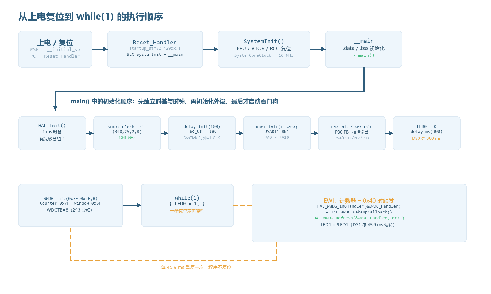
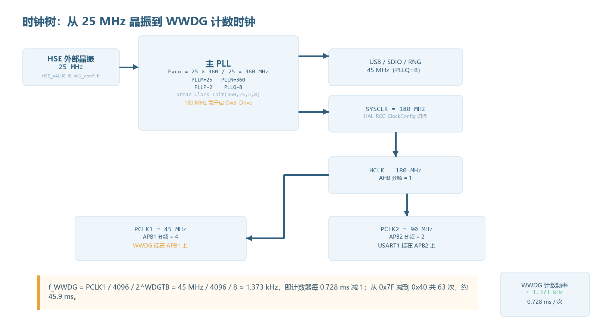
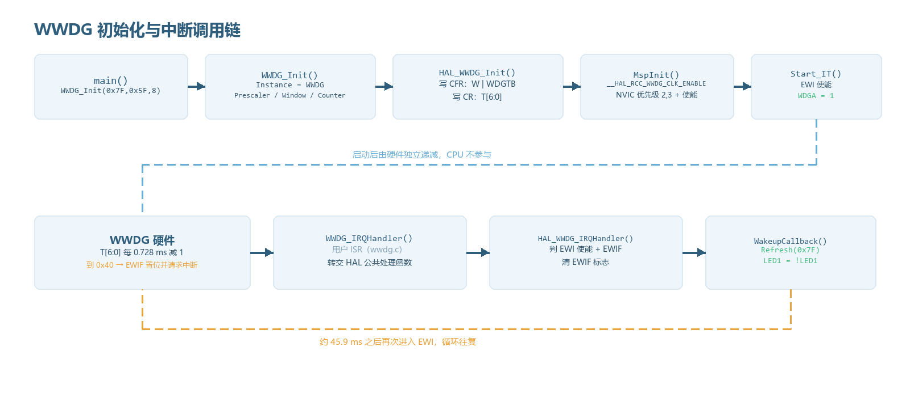
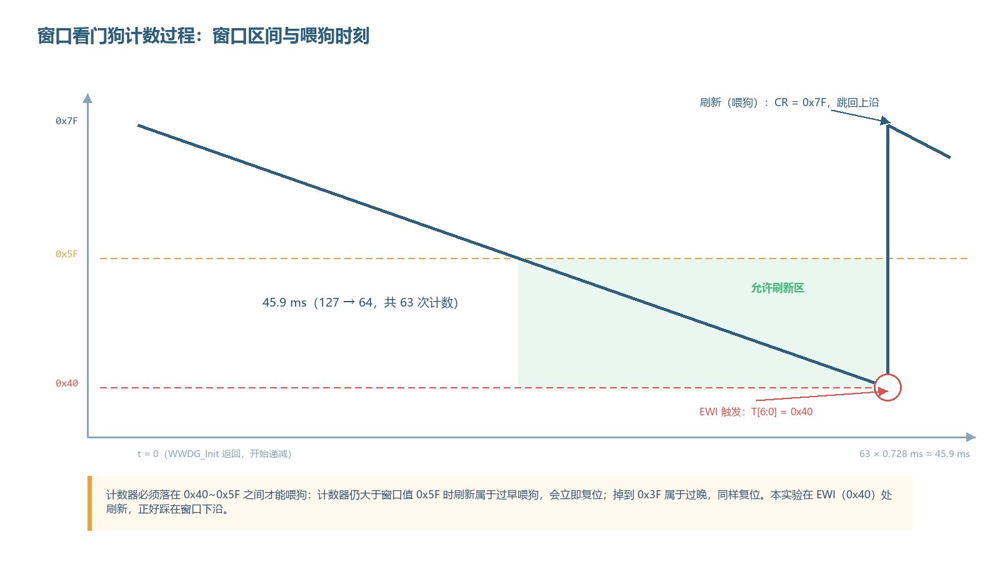
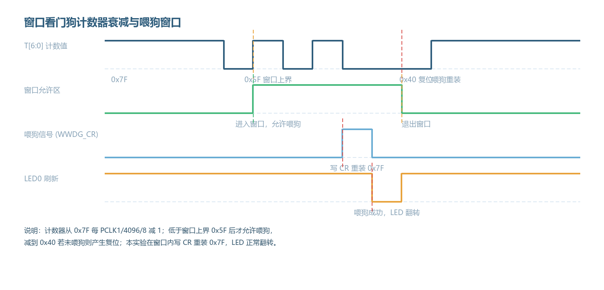
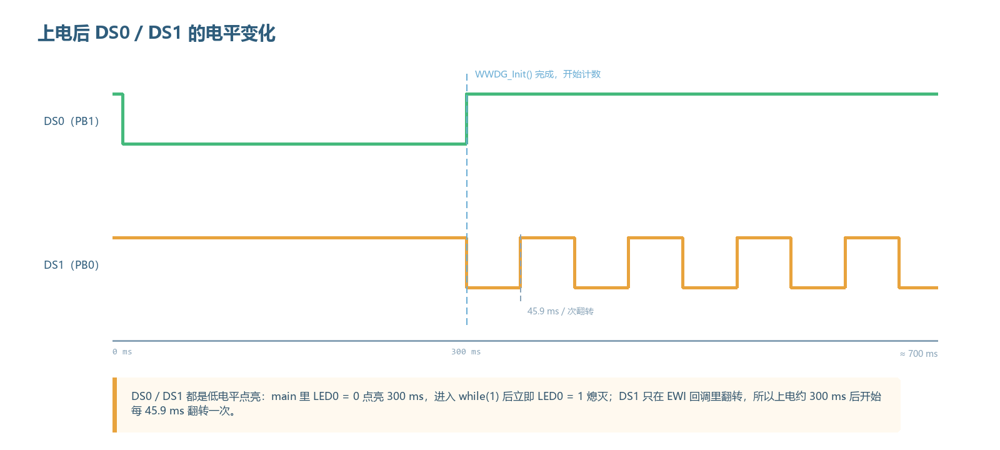

01 实验概述与硬件资源
工程路径为 实验6 窗口看门狗实验，Keil 工程是 USER\WWDG.uvprojx（TargetName = WWDG）。CPU 上电后先跑启动文件的 Reset_Handler，再进 main()，依次建立时基、时钟、延时、串口、LED/按键，最后启动 WWDG 并进入 while(1)。
| 项目 | 取值 | 出处 |
|---|---|---|
| MCU | STM32F429IGTx（Cortex-M4F，180 MHz） | WWDG.uvprojx <Device> |
| 预处理宏 | USE_HAL_DRIVER, STM32F429xx | WWDG.uvprojx <Define> |
| 外部晶振 | HSE = 25 MHz | stm32f4xx_hal_conf.h：HSE_VALUE |
| 系统时钟 | 180 MHz（PLL：360/25/2/8） | main.c：Stm32_Clock_Init(360,25,2,8) |
| 看门狗参数 | Counter=0x7F，Window=0x5F，WDGTB=8 | main.c：WWDG_Init(0X7F,0X5F,WWDG_PRESCALER_8) |
| 实验现象 | DS0 亮 300 ms 后熄灭；DS1 上电约 300 ms 起每 45.9 ms 翻转一次 | main.c + wwdg.c |
引脚分配
| 引脚 | 功能 | 配置 | 本实验是否参与 |
|---|---|---|---|
| PB1 | DS0（LED0） | 推挽输出，低电平点亮 | 是，亮 300 ms 后熄灭 |
| PB0 | DS1（LED1） | 推挽输出，低电平点亮 | 是，EWI 回调里翻转 |
| PA0 / PC13 / PH2 / PH3 | KEY0 / KEY1 / KEY2 / WK_UP | PA0 下拉输入，其余上拉输入 | 仅初始化，未调用 KEY_Scan |
| PA9 / PA10 | USART1 TX / RX | 复用推挽（AF7） | 仅初始化，main 未 printf |
printf，也没有调用 KEY_Scan。串口与按键初始化是为了保持工程模板完整，真正产生现象的是 WWDG 的 EWI 中断。02 工程目录与文件分工
| 文件 | 负责什么 | 本页关注点 |
|---|---|---|
CORE\startup_stm32f429xx.s | 向量表、栈/堆定义、Reset_Handler | 复位入口与中断入口地址 |
USER\system_stm32f4xx.c | SystemInit()：FPU、VTOR | 上电后第一段 C 代码 |
USER\main.c | 应用入口与初始化顺序 | 全文引用 |
USER\stm32f4xx_it.c | SysTick_Handler → HAL_IncTick() | 1 ms 时基 |
USER\stm32f4xx_hal_conf.h | HSE_VALUE、TICK_INT_PRIORITY | 25 MHz / 0x0F |
SYSTEM\sys\sys.c | Stm32_Clock_Init()、WFI/中断开关 | PLL 与总线分频 |
SYSTEM\delay\delay.c | delay_init / delay_us / delay_ms | 基于 SysTick 的忙等延时 |
SYSTEM\usart\usart.c | uart_init()、fputc 重定向 | printf 支持 |
HARDWARE\LED\led.c | LED_Init() | PB0/PB1 输出 |
HARDWARE\KEY\key.c | KEY_Init() / KEY_Scan() | 只初始化 |
HARDWARE\WWDG\wwdg.c | WWDG_Init / MspInit / IRQHandler / 回调 | 本实验核心 |
HALLIB\...\stm32f4xx_hal_wwdg.c | HAL 公共实现 | CFR/CR 写入、EWI 处理 |
sys.h 里 SYSTEM_SUPPORT_OS 定义为 0，因此 delay.c 走“不用 OS”分支，SysTick_Handler 也由 stm32f4xx_it.c 提供，只调用 HAL_IncTick()。03 启动流程总览

main 函数全文
int main(void) { HAL_Init(); //初始化HAL库 Stm32_Clock_Init(360,25,2,8); //设置时钟,180Mhz delay_init(180); //初始化延时函数 uart_init(115200); //初始化USART LED_Init(); //初始化LED KEY_Init(); //初始化按键 LED0=0; //点亮LED0 delay_ms(300); //延时300ms再初始化看门狗,LED0的变化"可见" WWDG_Init(0X7F,0X5F,WWDG_PRESCALER_8); //计数器值为7F，窗口寄存器为5F，分频数为8 while(1) { LED0=1; //熄灭LED灯 } }
顺序为什么这样排
- HAL_Init 必须最先：它建立 1 ms SysTick 时基并设置中断优先级分组，后面的
delay_ms与 HAL 外设驱动都依赖它。 - 时钟在延时之前：
delay_init(180)只是记录倍乘数 180，真正的 SysTick 重载值由HAL_RCC_ClockConfig()内部再次调用HAL_InitTick()刷新，所以必须先把主频切到 180 MHz。 - WWDG 最后启动：
HAL_WWDG_Start_IT()一旦把 WDGA 置 1，计数器就开始递减，必须在 45.9 ms 内被服务，因此前面的初始化都要先完成。 - LED0=0 + delay_ms(300) 在 WWDG 之前：让 DS0 的“亮一下”肉眼可见，随后进入
while(1)立即熄灭。
04 启动文件与向量表
向量表开头
__Vectors DCD __initial_sp ; Top of Stack（第一个字） DCD Reset_Handler ; Reset Handler（第二个字） DCD NMI_Handler ; 异常号 2 ... DCD SysTick_Handler ; 异常号 15 ; External Interrupts DCD WWDG_IRQHandler ; 外部中断 0（WWDG_IRQn = 0） DCD PVD_IRQHandler ; 外部中断 1 ... DCD USART1_IRQHandler ; 外部中断 37
| 中断 | 异常号 | 向量表偏移 | Flash 地址 |
|---|---|---|---|
| Reset_Handler | 1 | 0x04 | 0x08000004 |
| SysTick_Handler | 15 | 0x3C | 0x0800003C |
| WWDG_IRQHandler | 16 + 0 | 0x40 | 0x08000040 |
| USART1_IRQHandler | 16 + 37 | 0xD4 | 0x080000D4 |
复位入口
Reset_Handler PROC
EXPORT Reset_Handler [WEAK]
IMPORT SystemInit
IMPORT __main
LDR R0, =SystemInit
BLX R0 ; 先跑 SystemInit
LDR R0, =__main
BX R0 ; 再交给 C 库的 __main
ENDP
[WEAK]（弱符号）。wwdg.c 里定义了同名的 WWDG_IRQHandler，链接器会用强符号覆盖弱符号，所以中断最终进入的是 wwdg.c 中的版本。05 SystemInit 与 __main
void SystemInit(void) { /* FPU settings */ #if (__FPU_PRESENT == 1) && (__FPU_USED == 1) SCB->CPACR |= ((3UL << 10*2)|(3UL << 11*2)); /* CP10/CP11 全访问 */ #endif /* 其他：外部存储器控制器等，本工程未使用 */ ... SCB->VTOR = FLASH_BASE | VECT_TAB_OFFSET; /* 向量表定位到 Flash */ }
- FPU 使能：置 CP10/CP11 全访问，之后浮点指令才可用。
- VTOR：把向量表基址设为
FLASH_BASE | VECT_TAB_OFFSET，本工程VECT_TAB_OFFSET = 0，即 0x08000000。 - SystemInit 不改主频：此时
SystemCoreClock仍为复位默认的 16 MHz（HSI），180 MHz 是后面Stm32_Clock_Init()才切换的。
随后 __main 完成分散加载：把 .data 初值从 Flash 拷到 SRAM、把 .bss 清零、初始化堆栈，最后跳转 main()。这段是 C 库代码，不在工程源文件中。
SystemInit 名字像“系统时钟初始化”，它在本工程里并不配置 PLL。真正配 PLL 的是 sys.c 的 Stm32_Clock_Init()。06 HAL_Init：时基与优先级分组
/* stm32f4xx_hal.c 中的 HAL_Init() 关键三步 */ /* Set Interrupt Group Priority */ HAL_NVIC_SetPriorityGrouping(NVIC_PRIORITYGROUP_2); //优先级分组2 /* Use systick as time base source and configure 1ms tick */ HAL_InitTick(TICK_INT_PRIORITY); //TICK_INT_PRIORITY = 0x0F /* Init the low level hardware */ HAL_MspInit();
| 中断 | 抢占优先级 | 子优先级 | 设置位置 |
|---|---|---|---|
| SysTick | 15 | 0 | HAL_InitTick(TICK_INT_PRIORITY)，TICK_INT_PRIORITY=0x0F |
| WWDG | 2 | 3 | wwdg.c：HAL_NVIC_SetPriority(WWDG_IRQn,2,3) |
| USART1 | 3 | 3 | usart.c：HAL_NVIC_SetPriority(USART1_IRQn,3,3) |
分组 2 的含义：8 位优先级中高 2 位表示抢占优先级、接下来 2 位表示子优先级，因此可填数值范围是 0~3。WWDG 抢占优先级 2 高于 USART1 的 3，两者可以互相嵌套；SysTick 为 15 最低，不会打断看门狗中断。
HAL_InitTick() 时主频还是 16 MHz，算出重载值 16000；HAL_RCC_ClockConfig() 内部会再调用一次 HAL_InitTick()，此时主频 180 MHz，重载值变为 180000。这也是为什么时钟配置要放在延时初始化之前。07 系统时钟与 SysTick 延时

RCC_OscInitStructure.OscillatorType=RCC_OSCILLATORTYPE_HSE;
RCC_OscInitStructure.HSEState=RCC_HSE_ON;
RCC_OscInitStructure.PLL.PLLState=RCC_PLL_ON;
RCC_OscInitStructure.PLL.PLLSource=RCC_PLLSOURCE_HSE;
RCC_OscInitStructure.PLL.PLLM=pllm; //25
RCC_OscInitStructure.PLL.PLLN=plln; //360
RCC_OscInitStructure.PLL.PLLP=pllp; //2
RCC_OscInitStructure.PLL.PLLQ=pllq; //8
ret=HAL_RCC_OscConfig(&RCC_OscInitStructure);
...
ret=HAL_PWREx_EnableOverDrive(); //180 MHz 必须开 Over-Drive
...
RCC_ClkInitStructure.SYSCLKSource=RCC_SYSCLKSOURCE_PLLCLK;
RCC_ClkInitStructure.AHBCLKDivider=RCC_SYSCLK_DIV1; //HCLK=180M
RCC_ClkInitStructure.APB1CLKDivider=RCC_HCLK_DIV4; //PCLK1=45M
RCC_ClkInitStructure.APB2CLKDivider=RCC_HCLK_DIV2; //PCLK2=90M
ret=HAL_RCC_ClockConfig(&RCC_ClkInitStructure,FLASH_LATENCY_5);
| 节点 | 算式 | 结果 |
|---|---|---|
| Fvco | 25 MHz × 360 / 25 | 360 MHz |
| SYSCLK | 360 / 2 | 180 MHz |
| HCLK | 180 / 1 | 180 MHz |
| PCLK1 | 180 / 4 | 45 MHz |
| PCLK2 | 180 / 2 | 90 MHz |
| USB / SDIO / RNG | 360 / 8 | 45 MHz |
延时函数
static u32 fac_us=0; void delay_init(u8 SYSCLK) { fac_us=SYSCLK; //SYSTEM_SUPPORT_OS=0 时只记倍乘数 } void delay_ms(u16 nms) { u32 i; for(i=0;i<nms;i++) delay_us(1000); }
delay_us() 是忙等实现：读 SysTick->VAL 并累加差值，累计到 nus × fac_us 节拍才退出。fac_us = 180 对应 180 MHz 的 SysTick 时钟，因此 delay_ms(300) 实际执行 300 × 1000 次微秒级延时。
delay_init() 并不修改它。延时精度取决于 delay_init() 传入的数字与真实 HCLK 是否一致——传错只会让延时不准，不影响 WWDG。08 串口与 printf 重定向
void uart_init(u32 bound) { UART1_Handler.Instance=USART1; UART1_Handler.Init.BaudRate=bound; UART1_Handler.Init.WordLength=UART_WORDLENGTH_8B; UART1_Handler.Init.StopBits=UART_STOPBITS_1; UART1_Handler.Init.Parity=UART_PARITY_NONE; UART1_Handler.Init.HwFlowCtl=UART_HWCONTROL_NONE; UART1_Handler.Init.Mode=UART_MODE_TX_RX; HAL_UART_Init(&UART1_Handler); //内部会调 HAL_UART_MspInit() HAL_UART_Receive_IT(&UART1_Handler, (u8 *)aRxBuffer, RXBUFFERSIZE); }
| 环节 | 代码位置 | 做了什么 |
|---|---|---|
| 时钟 | HAL_UART_MspInit | __HAL_RCC_GPIOA_CLK_ENABLE / __HAL_RCC_USART1_CLK_ENABLE |
| 引脚 | HAL_UART_MspInit | PA9/PA10 复用推挽，Alternate = GPIO_AF7_USART1 |
| 中断 | HAL_UART_MspInit | HAL_NVIC_SetPriority(USART1_IRQn,3,3) + EnableIRQ |
| printf | usart.c 顶部 | #pragma import(__use_no_semihosting) + 重定义 fputc |
int fputc(int ch, FILE *f) { while((USART1->SR&0X40)==0); //等待 TXE USART1->DR = (u8) ch; return ch; }
printf，所以串口不会输出任何内容。若自行加 printf，注意 fputc 是阻塞轮询，在中断里调用会拉长中断时间。09 LED 与按键初始化
//led.h #define LED0 PBout(1) //DS0 = PB1 #define LED1 PBout(0) //DS1 = PB0 //led.c void LED_Init(void) { GPIO_InitTypeDef GPIO_Initure; __HAL_RCC_GPIOB_CLK_ENABLE(); GPIO_Initure.Pin=GPIO_PIN_0|GPIO_PIN_1; GPIO_Initure.Mode=GPIO_MODE_OUTPUT_PP; GPIO_Initure.Pull=GPIO_PULLUP; GPIO_Initure.Speed=GPIO_SPEED_HIGH; HAL_GPIO_Init(GPIOB,&GPIO_Initure); HAL_GPIO_WritePin(GPIOB,GPIO_PIN_0,GPIO_PIN_SET); //DS1 灭 HAL_GPIO_WritePin(GPIOB,GPIO_PIN_1,GPIO_PIN_SET); //DS0 灭 }
PBout(n) 是位带别名宏，等价于对 GPIOB 输出数据寄存器某一位做原子读写，所以 LED1=!LED1 在中断里使用是安全的（读—改—写不会被主循环打断）。
按键部分：PA0 下拉输入（WK_UP 高有效），PC13/PH2/PH3 上拉输入（KEY0/1/2 低有效）。KEY_Init() 之后 main 再没有调用 KEY_Scan()，按键在本实验中不产生任何动作。
LED0=0，这样上电不会出现与代码逻辑不符的随机亮灯。10 WWDG 初始化拆解

void WWDG_Init(u8 tr,u8 wr,u32 fprer) { WWDG_Handler.Instance=WWDG; WWDG_Handler.Init.Prescaler=fprer; //WDGTB，仅最低 2 位有效 WWDG_Handler.Init.Window=wr; //W[6:0] WWDG_Handler.Init.Counter=tr; //T[6:0] HAL_WWDG_Init(&WWDG_Handler); HAL_WWDG_Start_IT(&WWDG_Handler); } void HAL_WWDG_MspInit(WWDG_HandleTypeDef *hwwdg) { __HAL_RCC_WWDG_CLK_ENABLE(); //使能 WWDG 时钟 HAL_NVIC_SetPriority(WWDG_IRQn,2,3); //抢占 2，子优先级 3 HAL_NVIC_EnableIRQ(WWDG_IRQn); }
| 传入参数 | 实际值 | 落入寄存器 | 含义 |
|---|---|---|---|
| tr | 0x7F | CR.T[6:0] | 计数器初值（最大） |
| wr | 0x5F | CFR.W[6:0] | 窗口上限，计数器高于它时喂狗即复位 |
| fprer | WWDG_PRESCALER_8 | CFR.WDGTB[1:0] = 11 | 计数时钟再 8 分频 |
HAL 内部实际写寄存器
if(hwwdg->State == HAL_WWDG_STATE_RESET) { hwwdg->Lock = HAL_UNLOCKED; HAL_WWDG_MspInit(hwwdg); //只有首次才调 MSP } ... /* Set WWDG Prescaler and Window */ MODIFY_REG(hwwdg->Instance->CFR, (WWDG_CFR_WDGTB | WWDG_CFR_W), (hwwdg->Init.Prescaler | hwwdg->Init.Window)); /* Set WWDG Counter */ MODIFY_REG(hwwdg->Instance->CR, WWDG_CR_T, hwwdg->Init.Counter); /* HAL_WWDG_Start_IT() */ __HAL_WWDG_ENABLE_IT(hwwdg, WWDG_IT_EWI); //先开 EWI __HAL_WWDG_ENABLE(hwwdg); //CR.WDGA = 1，开始递减
HAL_WWDG_Init() 写 CFR/CR，再 HAL_WWDG_Start_IT() 置 WDGA。如果先置 WDGA 再写 CR，写 CR 虽然只改 T[6:0]，但窗口与分频可能仍是复位值，行为会不对。11 窗口时序与喂狗时刻

| 计算项 | 算式 | 结果 |
|---|---|---|
| WWDG 计数时钟 | PCLK1 / 4096 = 45 MHz / 4096 | ≈ 10986 Hz |
| WDGTB=8 再分频 | 10986 / 2³ | ≈ 1373 Hz |
| 单次计数 | 1 / 1373 Hz | ≈ 0.728 ms |
| 0x7F → 0x5F | 32 × 0.728 ms | ≈ 23.3 ms |
| 窗口宽度 0x5F → 0x40 | 31 × 0.728 ms | ≈ 22.6 ms |
| 0x7F → 0x40 | 63 × 0.728 ms | ≈ 45.9 ms |
- 喂狗过早：计数器仍大于 0x5F 时写 CR，硬件判定为“不在窗口内”，立即复位。
- 喂狗过晚：计数器从 0x40 滚到 0x3F（T6 清 0），直接复位。
- 本工程的做法：主循环完全不喂狗，只靠 EWI 中断在 0x40 处喂狗，正好踩在窗口下沿，既复位不了也来不及漏掉。

12 中断服务与回调
//wwdg.c：用户中断服务函数 void WWDG_IRQHandler(void) { HAL_WWDG_IRQHandler(&WWDG_Handler); } //wwdg.c：回调里刷新计数器并翻转 DS1 void HAL_WWDG_WakeupCallback(WWDG_HandleTypeDef* hwwdg) { HAL_WWDG_Refresh(&WWDG_Handler,WWDG_CNT); //WWDG_CNT = 0x7F LED1=!LED1; }
//HAL 公共处理函数的关键判断 if(__HAL_WWDG_GET_IT_SOURCE(hwwdg, WWDG_IT_EWI) != RESET) { if(__HAL_WWDG_GET_FLAG(hwwdg, WWDG_FLAG_EWIF) != RESET) { HAL_WWDG_WakeupCallback(hwwdg); //回调 hwwdg->State = HAL_WWDG_STATE_READY; __HAL_WWDG_CLEAR_FLAG(hwwdg, WWDG_FLAG_EWIF); //清标志 } }
| 层级 | 函数 | 职责 |
|---|---|---|
| 硬件 | WWDG 计数器 | 0x40 时置 EWIF 并拉中断 |
| 向量表 | WWDG_IRQHandler（wwdg.c 强符号） | 转交 HAL |
| HAL | HAL_WWDG_IRQHandler | 判 EWI 使能与 EWIF，清标志 |
| 应用 | HAL_WWDG_WakeupCallback | Refresh(0x7F) + LED1 翻转 |
13 主循环与实验现象

上电后 DS0 被 LED0=0 点亮，delay_ms(300) 期间肉眼可见；随后 WWDG 启动，程序进入 while(1) 立刻把 LED0 置 1 熄灭，之后主循环不再做任何有效动作。DS1 完全由 EWI 回调驱动。
14 总结与常见问题
全链路回顾
- 上电，CPU 从 0x08000000 取栈顶与
Reset_Handler。 Reset_Handler调SystemInit()：开 FPU、设 VTOR。- C 库
__main搬运 .data、清零 .bss，跳main()。 HAL_Init()：分组 2 + 1 ms SysTick 时基。Stm32_Clock_Init(360,25,2,8)：PLL → 180 MHz，PCLK1 45 MHz。delay_init(180)/uart_init(115200)。LED_Init()/KEY_Init()，LED0=0点亮 300 ms。WWDG_Init(0x7F,0x5F,WDGTB=8)：写 CFR/CR，开 NVIC，置 WDGA。- 每 45.9 ms 进一次 EWI，刷新计数器并翻转 DS1；
while(1)只执行LED0=1。
| 现象 | 可能原因 | 排查点 |
|---|---|---|
| DS0 亮后一直不灭 | 卡在 delay_ms(300) | 时钟是否切到 180 MHz，SysTick 是否在跑 |
| DS1 完全不闪 | 没进 EWI | WDGA 是否置 1、NVIC 是否使能、PCLK1 是否 45 MHz |
| 板子周期性自动复位 | 喂狗过早或过晚 | 刷新时刻是否落在 0x40~0x5F；是否在 0x7F 时就刷新 |
| DS1 闪烁频率明显不对 | 时钟或分频算错 | PCLK1 是否 45 MHz、WDGTB 是否 8 |
| 延时明显偏长或偏短 | delay_init() 参数与真实 HCLK 不符 | main 中是否写的是 180 |
| 改了 wwdg.c 但中断没变化 | 新写了另一个同名函数 | 确认链接的是强符号而非启动文件弱符号 |